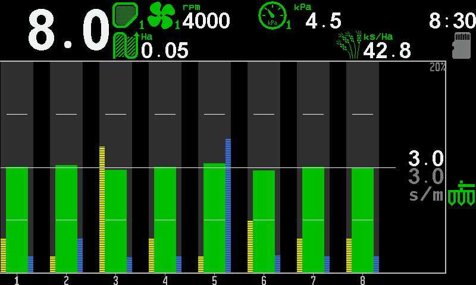

The home screen
What every part of the home screen is — speed, indicators, area, rates, the section diagrams — on a drill standing still and on a planter at work, and what you can do from it by touch.
The home screen is the main working screen. It shows the diagrams of the section control sensors, the state indicators of the devices and the key figures of the work. What it shows follows the profile: every group of sensors and devices entered there gets its icons, its columns, its rate field.
The screen has four zones. The travel speed stands large at the top left. The indicator rows run along the top, with the clock at the top right. A column of indicators runs down the right-hand edge. The lower part holds the diagrams — one column per section — each with its rate field on the right.
A grain drill with seed and fertilizer

- Travel speed. In km/h. Messages about the speed replace the figure. Speed
- Hoppers. One icon per hopper sensor, numbered. Red — the level is below the sensor. Hopper
- Metering units. Rotation of the dispenser shafts; the icon turns while the shaft turns. Metering unit
- Fan. The fan icon and its speed in rpm. Fan
- Engine sensors. Oil pressure, battery charge and ignition of the fan-drive engine. Engine sensors
- Clock. The time of day; the slot also carries messages. Clock
- Memory card. Shown while a microSD card is ready. Memory card
- Area. Hectares treated on the active field. Area
- Product rate by weight. The rate of a product, in kg/ha. Product rate by weight
- Seed diagram. One column per seed sensor; the white line is the control line. The section diagram
- Rate field. Measured rate on top, target below, here in seeds per second. Change the target rate
- Fertilizer diagram. The fertilizer sections, with their own rate field.
- Right-hand column. Implement position, manual lock, satellites, actuator failure — whichever the machine has. Indicators
- Section numbers. The number of each section, under its column.
A planter at work

- Travel speed. Speed
- Hopper. Green — product above the sensor.
- Pressure. Vacuum or positive pressure in kPa. Pressure
- Area. Hectares treated on the active field.
- Population. The actual seeding rate in thousands of seeds per hectare. Population
- Section column. Green — the row sows within its tolerance. Column colours
- Skips bar. Yellow hatching on the left of a column: the share of skips in that row.
- Doubles bar. Blue hatching on the right of a column: the share of doubles.
- Rate line. The target rate across all rows.
- Tolerance ticks. Upper and lower limit of the permitted deviation, in every column.
- Rate field. Measured seeds per metre on top, target below.
- Implement position. Green — lowered, in work. Implement position
What each indicator means in all its states is in Indicators; the diagram itself — line, ticks, colours — in The section diagram.
What you can do from the home screen
| To do this | Do this |
|---|---|
| Open the main menu | Tap with two fingers |
| Change the target rate or the alarm level | Touch and hold the diagram, then swipe up or down — Change the target rate |
| Set the target of a product by weight | Touch and hold its kg/ha indicator; the number pad opens |
| Let the panel set the alarm level | Double tap, while applying — Set the alarm level |
| Lock or unlock product application | Touch and hold an empty place of the right-hand column — Lock application by hand |
| Open the settings of a device | Touch and hold its icon or column |
| Go to the next working screen | Long swipe left — Working screens |
| Open the second home screen | Long swipe right — Second home screen |
A long swipe runs across more than a third of the screen. All gestures on all screens: Touch zones and gestures.
Something your machine does that this page does not answer? Write to support@agriwelt.com — an engineer answers.